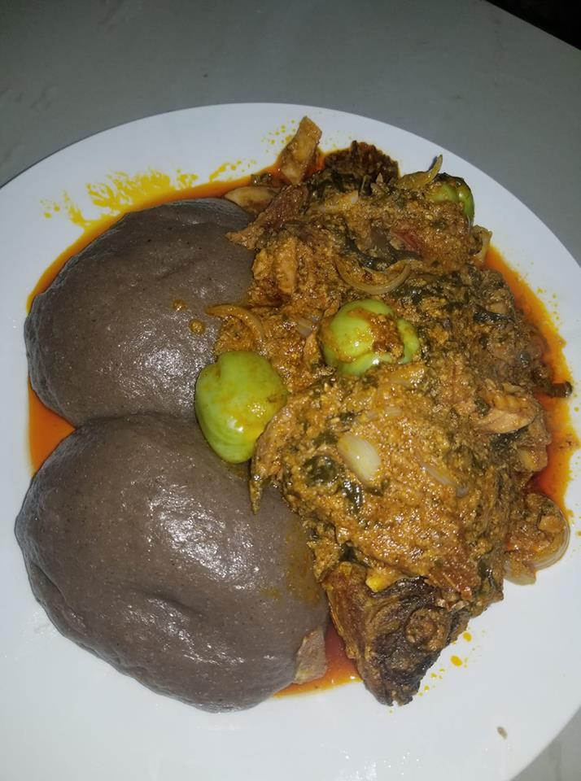
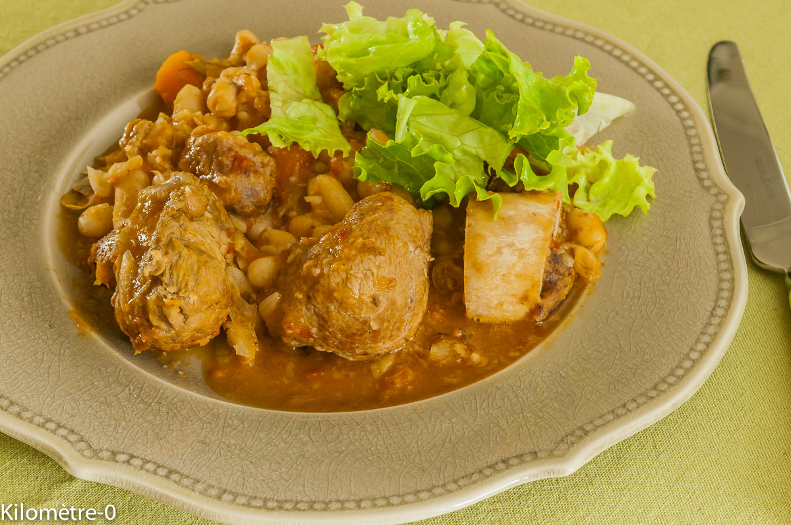
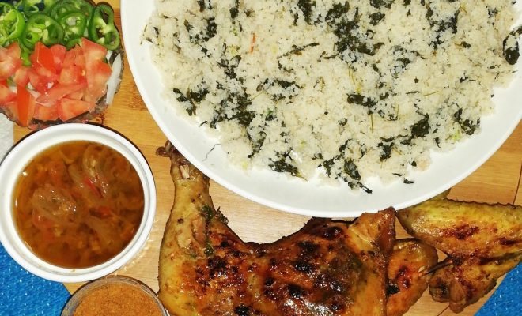
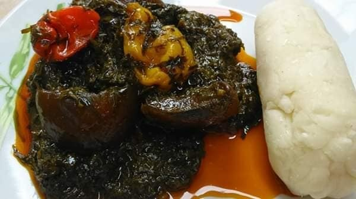
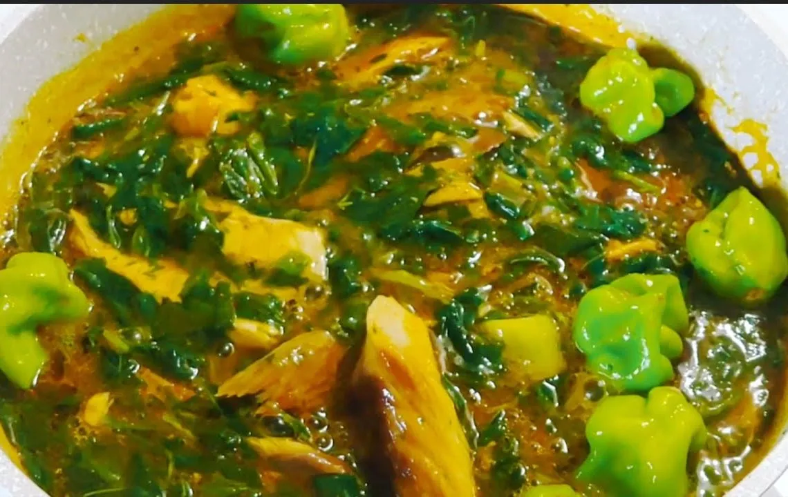
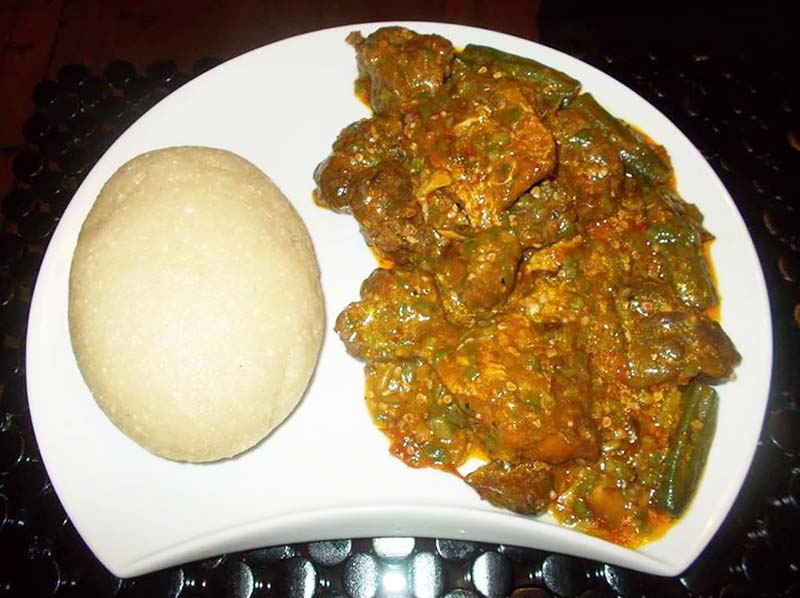

Menu
La cuisine africaine regorge de plats savoureux et authentiques, riches en saveurs et en épices. Pour impressionner vos convives, pourquoi ne pas leur proposer des recettes typiques? Ces mets leur offriront une expérience culinaire inoubliable.


Sauce de boeuf

Dambou

Kopto

Sauce Foku

Sauce Gombo

Mechoui Targui
